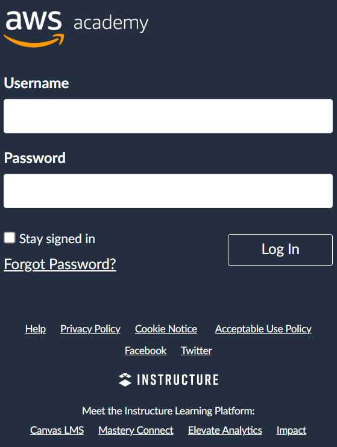
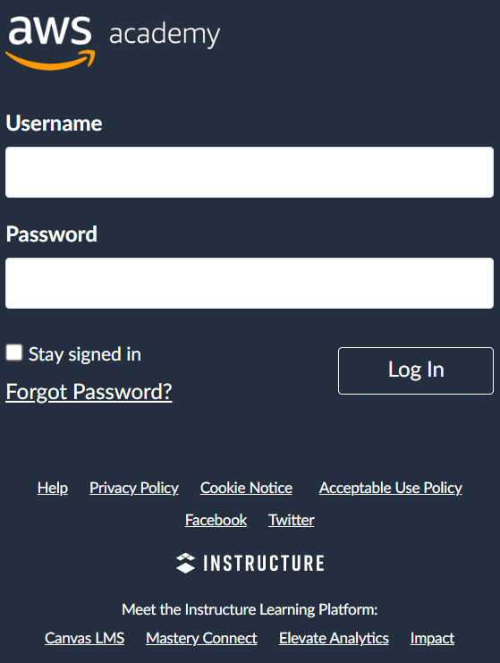
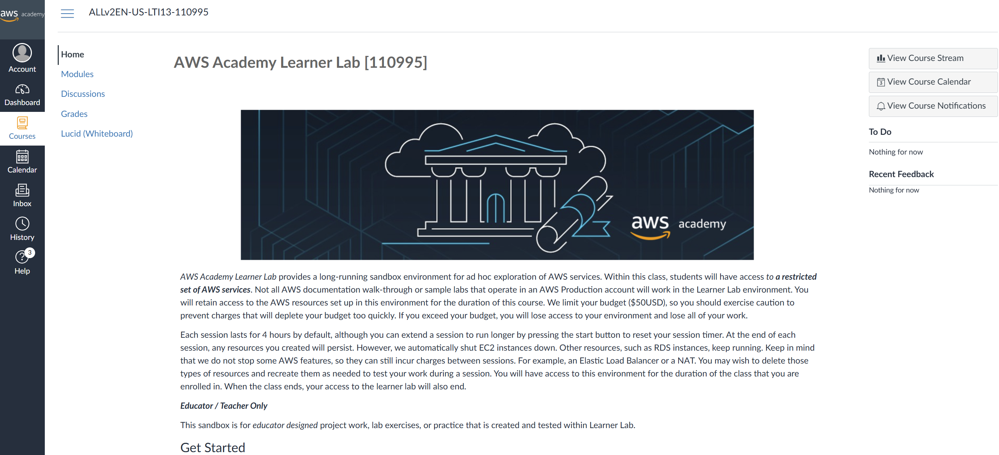
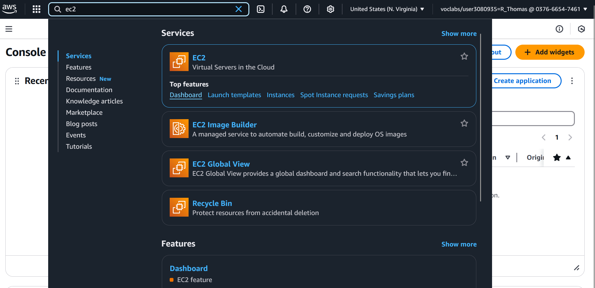

Aside
Github Classroom links for this practical can be found on Edstem https://edstem.org/au/courses/21491/discussion/2429006
Install Terraform1 before your practical class. Also install the Terraform plugin for your IDE.
This week our goal is to get acquainted with AWS Academy. We use AWS Academy to learn how to deploy and manage infrastructure with AWS. Additionally, AWS Academy will be used to develop the Cloud Infrastructure assignment. If you have not already enrolled in the AWS Academy courses, you need to do so now.
AWS Academy Practicals Learner Lab [ 110995]
AWS Academy Assignment Learner Lab [ 112082]
AWS Academy Cloud Foundations [ 110989]
AWS Academy Cloud Architecting [ 110993]
AWS Academy Cloud Developing [ 110994]
This week you will learn how to:
Navigate the AWS Academy interface, if you have not done so already.
Enter the AWS Console from an AWS Academy lab.
Provision an EC2 instance that deploys a simple static website.
We will then start using an Infrastructure as Code tool, specifically, Terraform, to deploy the static website instead of using the AWS Console. This week you will also learn how to:
Authenticate Terraform to use the AWS Learner Lab.
Configure a single server website in Terraform and deploy.
Create a Terraform module for deploying arbitrary single server websites.
AWS Academy is an educational platform to teach you how to use AWS services. In this course, we will be using it in two ways:
The AWS Cloud Foundations, Cloud Architecting, and Cloud Developing courses are supplementary material to help cement your ability to use AWS. You are encouraged to work your way through at least the AWS Cloud Foundations and Cloud Architecting courses.
The AWS Learner Lab ( 110995) provides access to an environment which will be used in these practicals to learn AWS. A separate Learn Lab ( 112082) will be used to develop your Cloud Infrastructure assignment. Remember that you have a $50 USD budget for each Learner Lab. Once you have spent your budget, you will not be able to use the Learner Lab.
Set up your AWS Academy account by responding to your email invitation and clicking Get Started. The email invitation will come from AWS Academy. Check your junk/spam folders.

Go to https://www.awsacademy.com/vforcesite/LMS_Login to login.
Press Student Login.
Use the email address that received the email invitation.
 

Aside
We will just be looking at the Learner Lab today, please ask on the Ed Discussion board if you need help using the supplementary AWS Academy courses.
Enter the Learner Lab via the following steps.
Once you have enrolled in the course, you should see the course page.

Navigate to the Modules tab and select the link for “Launch AWS Academy Learner Lab”. You will need to accept the AWS Learner Lab terms and conditions to be able to launch learner lab. You may also open and browse the “AWS Academy Learner Lab Student Guide” and “Learn how to effectively use the AWS Academy Learner Lab” links, which cover some of the content of this practical.

You should now see the Learner Lab interface.
The AWS text, near the top left of the window, with the (currently) red circle is the link to open the AWS console.
You can also see your budget. Note that the budget is not updated in real-time, so avoid creating multiple resources at once.
The 00:00 is a countdown of hours remaining for your lab. A lab can only remain active for 4 hours, after which it will close, unless you press start lab again before the 4 hours expires. Once the lab is started, 00:00 will change to 04:00.
AWS details will become important later but are not needed now.
The README button will re-open the text panel currently on the right of the terminal interface.
The README text has a lot of important information including what AWS services are available in the learner labs environment, please read it.
The terminal interface is an environment with the SSH keys required to connect to AWS instances semi-automatically (we will use this today).

Notice
If you get an error message saying “labs.vocareum.com refused to connect.”, ensure that your browser is not in the incognito mode. If you still encounter this error, try using a different browser.
Go ahead and start the lab. It will take a few moments to get ready. The red circle will turn yellow as the lab is starting, and green once it has started. Click on the AWS text with the green circle when it is available. This will open the AWS Console in a new browser tab. (You may need to enable pop-ups from awsacademy.) If you end up working for a company which uses AWS, welcome to your new home.

Aside
Amazon Web Services (AWS) is an Infrastructure as a Service (IaaS) and Software as a Service (SaaS) provider. They offer a collection of services which are helpful for development. For example, they offer virtual compute resources, database storage options, and networking to tie it all together. Services are offered on a pay as you go model, meaning you only pay for the seconds you use a service. We will now get acquainted with some simple services offered by AWS.
Today we are focussing on using AWS’s EC2 service. Elastic Compute Cloud (EC2) is the primary compute service offered by AWS. It allows you to create virtual machines on Amazon’s infrastructure. You have full control over this machine and can configure it for whatever purpose you need.
Navigate to the search bar in the top left and find the EC2 service. You might find this interface overwhelming. It is important to note that since EC2 is one of the primary services offered by AWS, many smaller services we do not need are bundled into this service.

Today, we only need the Instances dashboard. Navigate to there and select “Launch instance”.

First we will need to select an Amazon Machine Image (AMI). An AMI is the template that provides instructions on how an instance should be provisioned. Amazon offers a range of built-in AMIs. There are also community AMIs or you can create your own. As we just want a simple server today, we will use one of the built-in AMIs.
We will use the Amazon Linux 2023 AMI today, it is considered one of the fundamental images. Every AMI has a unique AMI code, which is ami-08b5b3a93ed654d19 for the Amazon Linux 2023 AMI.

The settings to configure your instance are:
Add a ‘Name’ tag. Call it the name of your website, e.g. hextris.
Select an appropriate AMI, i.e. Amazon Linux 2023 AMI, ami-053a45fff0a704a47.
Select a 64-bit (x86) architecture.
The instance type defines the computing, memory, networking and storage capabilities of your instance. We do not need a large server, choose t2.micro.
Select the existing vockey (Type: RSA) key pair option.
In network settings, choose ‘Create security group’ and select to allow SSH traffic from anywhere, and HTTPS and HTTP access from the internet.
Keep the ‘Configure storage’ settings as default.
Do not worry about the ‘Advanced details’ options for now.
You can now launch the instance to start your server.
Return to the Instances dashboard. You should see that a new instance has been created. Its instance state might not yet be Running, if not, wait.
Note the public IPv4 address, as we will need to use this to connect to the server. You will also need this address to test that installation of Hextris in section 7 worked.
Return to the AWS Learner Lab interface.
Run the following, replacing 127.0.0.1 with the public IP address of your instance. This command uses the vockey | RSA key pair to gain SSH access to the machine.
For example:
You can also access the instance by selecting it from the list of instances in the dashboard and clicking the "Connect" button. This will open a new tab in your browser with terminal access to your instance.
Hextris [1] is very simple to install. Using an EC2 interface is perhaps overkill for it. It is an entirely client-side/static web application, which means we just have to serve the static files.
First, we will need to enable serving of static files. We can install and start the httpd service to do this. The AMI we have picked uses the yum package manager, so to install httpd we run:
> sudo yum install httpd Last metadata expiration check: ... Dependencies resolved ..... ..... Total download size: 2.3 M Installed size: 6.9 M Is this ok [y/N]: # enter y to install ..... ..... Complete! > sudo systemctl enable httpd Created symlink from /etc/systemd/system/multi-user.target.wants/httpd.service to /usr/lib/systemd/system/httpd.service. > sudo systemctl start httpd
All files in the /var/www/html directory will now be served when accessed via HTTP. Navigate to the public IP address of your EC2 instance in the browser. You should see an “It works!” landing page.
Change to the /var/www/html directory and notice that it is currently empty. We need to download the static files to this directory so that they can be served. We can use git for this (though it is not the most suited tool), but first git needs to be installed on the instance.
Finally, confirm that we are in the /var/www/html directory.
And clone the repository into that directory.
Now if you navigate to the http address of the public IP address (e.g. http://18.208.165.253), you should be able to see your newly deployed website. Congratulations!
Notice
If you are having timeout issues, one problem could be using https to connect rather than http.
For the remainder of the practical we will use Terraform to provision the same instance we just created.
First, please delete any running instances in your AWS account using the AWS Console.
Next, navigate to the GitHub Classroom link for this practical provided at the start of this document. This will create a new repository where we can work on Terraform.
We will redeploy our Hextris application using Infrastructure as Code (IaC) to do so. You will need to keep your lab running for the next steps. (Now is a good time to click start to refresh your 4 hours.)
Click on ‘AWS Details’ to display information about the lab.
Click on the first ‘Show’ button next to ‘AWS CLI’ which will display a text block starting with [default].
Within your repository create a credentials file and copy the contents of the text block into the file. Do not share this file contents — do not commit it. This file is added to the .gitignore of your repository by default.
Create a main.tf file in the same directory with the following contents:
» cat main.tf
terraform { required_providers { aws = { source = "hashicorp/aws" version = "~> 5.0" } } } provider "aws" { region = "us-east-1" shared_credentials_files = ["./credentials"] default_tags { tags = { Environment = "Dev" Course = "CSSE6400" StudentID = "<Your Student ID>" } } }
The terraform block specifies the required external dependencies, here we need to use the AWS provider above version 5.0. The provider block configures the AWS provider, instructing it which region to use and how to authenticate (using the credentials file we created). We also include some tags to add to any resource made by this provider, these are useful for keeping track of resources in the console.
We need to initialise Terraform, which will download the required dependencies. This is done with the terraform init command.
This command will create a .terraform directory which stores providers and a provider lock file, .terraform.lock.hcl.
To verify that we have setup Terraform correctly, use terraform plan.
As we currently have no resources configured, it should find that no changes are required. Note that this does not ensure our credentials are correctly configured, as Terraform has no reason to try authenticating yet.
First, we will need to create an EC2 instance resource. The AWS provider calls this resource an aws_instance2. Get familiar with the documentation page. Most Terraform providers have reasonable documentation. Reading the argument reference section helps to understand what a resource is capable of doing.
We will start off with the basic information for the resource. Configure it to use a specific Amazon Machine Instance (AMI), and chose the t2.micro size. We will also give it a name so that it is easy to find. Add the following basic resource block to main.tf:
» cat main.tf
resource "aws_instance" "hextris-server" { ami = "ami-08b5b3a93ed654d19" instance_type = "t2.micro" key_name = "vockey" tags = { Name = "hextris" } }
To create the server, invoke terraform apply, which will first do terraform plan and prompt us to confirm if we want to apply the changes.
You should be prompted with something similar to the output below.
Terraform used the selected providers to generate the following execution plan. Resource actions are indicated with the following symbols: + create Terraform will perform the following actions: # aws_instance.hextris-server will be created + resource "aws_instance" "hextris-server" { + ami = "ami-08b5b3a93ed654d19" (omitted) + instance_type = "t2.micro" (omitted) + tags = { + "Name" = "hextris" } (omitted) } Plan: 1 to add, 0 to change, 0 to destroy. Do you want to perform these actions? Terraform will perform the actions described above. Only 'yes' will be accepted to approve. Enter a value:
If the plan looks sensible enter yes to enact the changes.
Enter a value: yes aws_instance.hextris-server: Creating... aws_instance.hextris-server: Still creating... [10s elapsed] aws_instance.hextris-server: Still creating... [20s elapsed] aws_instance.hextris-server: Still creating... [30s elapsed] aws_instance.hextris-server: Still creating... [40s elapsed] aws_instance.hextris-server: Creation complete after 47s [id=i-08c92a097ae7c5b18] Apply complete! Resources: 1 added, 0 changed, 0 destroyed.
You can now check in the AWS Console that another EC2 instance with the name hextris has been created. Now that we have a server, we should try to configure it to serve Hextris. We will use the user_data field, which configures commands to run when launching the instance. First we need a script to provision the server, if we combine all our commands from section 7, we will produce this script:
» cat serve-hextris.sh
#!/bin/bash yum install -y httpd systemctl enable httpd systemctl start httpd yum install -y git cd /var/www/html git clone https://github.com/Hextris/hextris .
Now we can add the following field to our Terraform resource. It uses the Terraform file function to load the contents of a file named serve-hextris.sh, relative to the Terraform directory. The contents of that file is passed to the user_data field.
If you run the terraform plan command now, you will notice that Terraform has identified that this change will require creating a new EC2 instance. Where possible, Terraform will try to update a resource in-place but since this changes how an instance is started, it needs to be replaced. Go ahead and apply the changes.
Now, in theory, we should have deployed Hextris to an EC2 instance. But how do we access that instance? We could go to the AWS Console and find the public IP address. However, it turns out that Terraform already knows the public IP address. In fact, if you open the Terraform state file (terraform.tfstate), you should be able to find it hidden away in there. But, we do not want to go hunting through this file all the time. Instead we will use the output keyword.
We can specify certain attributes as ‘output’ attributes. Output attributes are printed to the terminal when the module is invoked directly but as we will see later, they can also be used by other Terraform configuration files.
» cat main.tf
This creates a new output attribute, hextris-url, which references the public_ip attribute of our hextris-server resource. Note that resources in Terraform are addressed by the resource type (aws_instance) followed by the name of the resource (hextris-server).
If you apply the changes, it should tell you the public IP address of the instance resource.
aws_instance.hextris-server: Refreshing state... [id=i-043a61ff86aa272e0] Outputs: hextris-url = "3.82.225.65"
You can apply this plan to save these new output values to the Terraform state, without changing any real infrastructure.
So let’s try and access that URL, hmm. That is strange. Something has gone wrong.
When we setup our EC2 instance using the AWS Console, it helpfully created a new security group for us. We specified that this security group should allow SSH, HTTP, and HTTPS traffic by allowing traffic from ports 22, 80, and 443 respectively. When configuring with Terraform, security groups and their attachment to EC2 instances are separate resources. Refer back to the Terraform documentation for details or, as is normally quicker, Google “terraform aws security group”.
First, let us create an appropriate security group. Recall that in the AWS Console configuration, ingress SSH access (port 22) and all egress3 traffic were automatically configured and we just added ingress port 80. In Terraform the whole state must be configured so we specify two ingress blocks, one for HTTP (port 80) and one for SSH access (port 22).4 Additionally, we will create egress for all outgoing traffic.
resource "aws_security_group" "hextris-server" { name = "hextris-server" description = "Hextris HTTP and SSH access" ingress { from_port = 80 to_port = 80 protocol = "tcp" cidr_blocks = ["0.0.0.0/0"] } ingress { from_port = 22 to_port = 22 protocol = "tcp" cidr_blocks = ["0.0.0.0/0"] } egress { from_port = 0 to_port = 0 protocol = "-1" cidr_blocks = ["0.0.0.0/0"] } }
Note the following:
from_port and to_port are the start and end of a range of ports rather than incoming or outgoing. In this example our range is 80-80.
protocol set to “-1” is a special flag to indicate all protocols.
Explaining cidr is outside the scope of the course, but the specified block above means to apply to all IP addresses.
You may now apply the changes to create this new security group resource.
Next, we will attach the security group to the EC2 instance. Return to the aws_instance.hextrix-server resource and include the following line:
Note that EC2 instances can have multiple security groups. Once again notice the structure of resource identifiers in AWS.
Now apply the changes. If you now try to access via the IP address (the IP address may have changed), you should be able to view the Hextris website.
One of the important features of Infrastructure as Code (IaC) is all the configuration we just did is stored in a file. This file can, and should be, version controlled and subject to the same quality rules of code files. It also means that if we want to redeploy Hextris at any point, we can easily just run the IaC to deploy it.
To try this out, let us first take everything down. We can do this with:
You should be prompted to confirm that you want to destroy all of the resources in the state. Once Terraform has finished taking everything down, confirm that you can no longer access the website and that the AWS console says the instances have been destroyed.
Now go ahead and apply the changes to bring everything back:
Confirm that this brings the website back exactly as before (with a different IP address). You can now start any lab you want and almost instantly spin back up the website you have configured. That is the beauty of Infrastructure as Code!
Hint: Destroy everything again before you finish.
A quick note about automated testing. As with all the practicals thus far, this practical has automated tests enabled on your repository.
From within your repository, you can run the tests locally with:
While the emails saying that the tests failed can be annoying, these automated tests allow us to ensure that everyone is keeping up with the practical content.
If fixing the test failures is not too hard, please try to do so. If you are repeatedly not passing the practicals, we may reach out to ensure that you are not being left behind in the content.
Info
This section is for students who have completed the practical and want to extend their knowledge.
Since CSSE6400 runs this practical every year, sometimes the AMI that we were using is out of date or does not exist any more. For this practical, we could instead query AWS for the latest AMI and use that in our Terraform.
To do this we introduce a new data source, aws_ami. Data sources fetch or query data from the provider, rather than creating something.
Add the following to your main.tf file:
data "aws_ami" "latest" { most_recent = true owners = ["amazon"] filter { name = "name" values = ["al2023-ami-2023*"] } filter { name = "root-device-type" values = ["ebs"] } filter { name = "virtualization-type" values = ["hvm"] } filter { name = "architecture" values = ["x86_64"] } }
The aws_ami data source will find the latest Amazon Linux 2023 AMI for 64 bit x86, which is what is running on our EC2 instance.
To use the data source we need to change the ami attribute of the aws_instance resource to use the data source. This is done as so:
resource "aws_instance" "hextris-server" { ami = data.aws_ami.latest.id instance_type = "t2.micro" key_name = "vockey" security_groups = [aws_security_group.hextris-server.name] user_data = file("./serve-hextris.sh") tags = { Name = "hextris" } }
And now, if we run terraform plan, we will see that it wants to destroy and recreate the EC2 instance. This is because the AMI has changed since this practical was first updated for this year.
[1] L. Engstrom, G. Finucane, N. Moroze, and M. Yang, “Hextris.” https://github.com/hextris/hextris/, 2014.
[2] “Aws global infrastructure.” https://aws.amazon.com/about-aws/global-infrastructure/, March 2025.
AWS Regions Regions are the physical locations of AWS data centres. When applying Terraform, the changes are being made to one region at a time. In our case we specified the region us-east-1. Often you do not need to deploy to more than one region, however, it can help decrease latency and reduce risk from a major disaster. Generally, pick a region and stick with it, we have picked us-east-1 because it is the least expensive.
Availability Zones An AWS Region will consist of availability zones, normally named with letters. For example, the AWS Region located in Sydney, ap-southeast-2 has three availability zones: ap-southeast-2a, ap-southeast-2b, and ap-southeast-2c. An availability zone is a collection of resources which run on separate power supplies and networks. Reducing the risk that multiple availability zones would fail at once.
VPC Virtual Private Clouds, or VPCs, are virtual networks under your control, if you have managed a regular network before it should be familiar. VPCs are contained within one region but are spread across multiple availability zones.
1https://learn.hashicorp.com/tutorials/terraform/install-cli
2https://registry.terraform.io/providers/hashicorp/aws/latest/docs/resources/instance
3Ingress and egress in networking just means incoming and outgoing respectively.
4We do not actually need SSH access as all the server configuration is done when the machine is provisioned, thanks to the user_data, but we are trying to create a new instance that is identical to the original AWS Console in section 7.